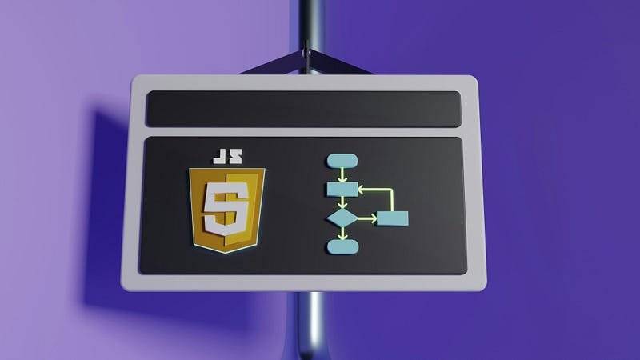
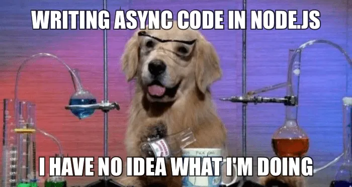
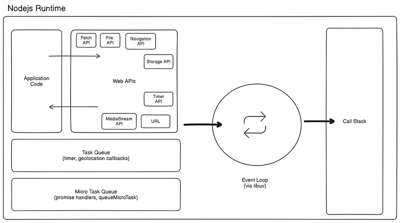
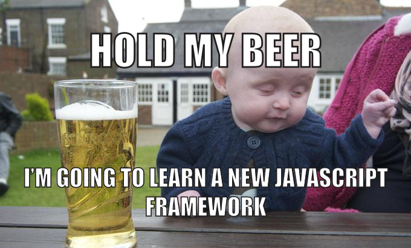

Nodejs is a quite famous and widely adopted language by enterprises as well as open source community. Because of its unique event-driven architecture, it can magically handle alot of async operations being a single thread language. Most of developers think its because of the magician named event loop but its more or less like a black box to them.

By the end of this story, you will be able to visualise how you Nodejs code actually works under the hood.
Where execution happens
Nodejs executes with help Node runtime. It is asynchronous event-driven JavaScript runtime. Just like Java has JRE (Java runtime environment).
Following are the major components of Node runtime which we will talk about.
Event loop
Nodejs is single thread with respect to the user (developer) but it internally use multiple threads for its working. Nodejs use libuv which is a multi platform C++ library to support asynchronous IO. By default, 4 threads are available for libuv in a Nodejs application which supports asynchronisation to the app. The libuv library provides the infamous event loop to Node runtime.
Tip : You can increase thread pool size of libuv by setting process.env.UV_THREADPOOL_SIZE
WebAPIs
Web APIs refers to collection inbuilt Node or browser supported APIs like Timers (setTimeout, setInterval), fetch, File APIs, URL.
Task queues
Can be called macro task queue, which primarily handles async callbacks especially from WebAPIs like callback for setTimout or fetch.
Micro task queue
Specialised task queue, which handles the promise handlers (then, catch, finally callbacks), queueMicroTask, Mutation Observer callback and function body after keyword ‘await’.
Call stack
Call stack similar to any other programming language which is use to push function calls for execution and then pop after execution ends.
For those who have might questions, Node runtime also has other components like heap, garbage collector etc but they are excluded for the sake of simplicity.
How execution happens
This is how you can visualize the Node runtime with required components.

When code executes line by line by V8 engine, variables are initialised and then a function call gets pushed to call stack. If this is a blocking Web API call such as setTimeout or fetch, it gets offloaded to Node runtime for async execution and pops out of call stack. Otherwise non blocking call such as console.log, get executed and pops out similarly.
Explaining how blocking Web API call such as fetch natively works with file descriptors and mechanisms like kqueue or epoll is deliberatly kept out of scope atleast for this discussion.
After completion or error, Web APIs handlers are pushed to the task queues. If its a callback based Web API, callback will be pushed to task queue otherwise for promise base API, promise handlers such as then and catch calls will be pushed to micro task queue.
Here, event loops comes into the picture and now it checks firstly the micro task queue and pops out the call which is then push to the call stack for V8 engine to execute. After micro task queue is empty, event loop will pick task queue calls and similarly transfer them to call stack.
A thing to note is that micro task queue has higher priority than task queue for event loop. You can also block Node process by recursively putting calls on micro task queue 😈.
Event loop is single threaded and its job is to pickup pending calls from task queues and put them in call stack for execution whereas blocking IO operations are actually performed by Web APIs which internally utilise libuv threads (by default 4) for asynchronous execution.
What we learned
Following are some take ways (tips and tricks) from this article to enhance your understanding with Nodejs.
- Event loop utilisation is largely dependent on how you have coded your application. This is the reason callback to setInterval doesn’t execute with exact time delays. You can even block the event loop by your will.
- Promises gets higher priority as compare to callback APIs. Hence prefer using promised based Web APIs if important. Try wrapping a call with queueMicroTask(callback) .
- Increase number of threads in libuv pool by assigning process.env.UV_THREADPOOL_SIZE = value , where value ≤ 1024.
- You can execute a call before next iteration of event loop by hooking into the loop using process.nextTick
- Use worker threads to utilize libuv threads for performing CPU intensive task (like cryptography, compression, video encoding) as multi threaded operations

Don’t forget to follow me on Medium for more such content and give a clap if you like it.
References
- https://libuv.org/
- https://v8.dev/docs
- https://developer.mozilla.org/en-US/docs/Web/API
- https://nodejs.org/en/learn/asynchronous-work/understanding-processnexttick
- https://nodejs.org/docs/v20.15.1/api/globals.html#queuemicrotaskcallback
In Plain English 🚀
Thank you for being a part of the In Plain English community! Before you go:
- Be sure to clap and follow the writer ️👏️️
- Follow us: X | LinkedIn | YouTube | Discord | Newsletter
- Visit our other platforms: CoFeed | Differ
- More content at PlainEnglish.io